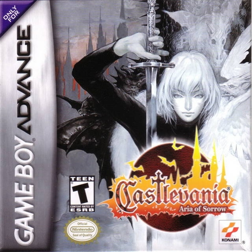

Castlevania: Aria of Sorrow
Descrição do Jogo: Um dos títulos mais aclamados da série Castlevania, Aria of Sorrow apresenta o jovem Soma Cruz, que descobre ter sido transportado para o castelo de Drácula em um futuro próximo. Soma precisa explorar o castelo, lutar contra criaturas sombrias e descobrir os segredos de seu próprio destino. O jogo introduz o sistema de Tactical Souls, permitindo que o jogador absorva habilidades de inimigos derrotados, oferecendo uma personalização estratégica única. Com gráficos impressionantes e uma trilha sonora marcante, o jogo combina a ação clássica da série com elementos de RPG e uma história envolvente.
Gênero: Ação/Plataforma (Metroidvania)
Plataforma: Game Boy Advance
Ano de lançamento: 2003
Avaliação Metacritic ⭐: 91